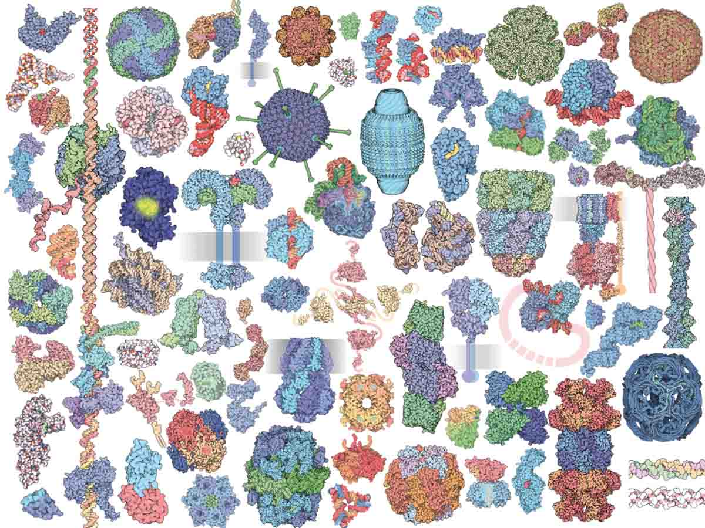

October 20, 2019

The Molecule of the Month series has been now assembled for almost 20 years. I have been a fan
of the series for many years. I must admit that the sheer volume of work and detail exposed could
keep me busy reading for all of my time. The experience of browsing the abundant work is rather
like
In short, the style of explaining and the inspiration that the content gives me drives me to
keep thinking about the deeper mysteries in and science of molecular biology, and to keep
driving to understand and develop ways that might help me to understand how things work in
this realm.
There is a nicely formatted overview available at the following link that describes the intention of Molecule of the Month as well as showcasing the art and science behind the effort:
https://www.ncbi.nlm.nih.gov/pmc/articles/PMC4420264/Note that this link is the same as the PMCID link for the Goodsell paper in the References.
References:
- Goodsell, D. S., Dutta, S., Zardecki, C., Voigt, M., Berman, H. M., Burley, S. K. The RCSB PDB "molecule of the month": Inspiring a molecular view of biology PLoS Biology 201513:e1002140 DOI: 10.1371/journal.pbio.1002140 PMID:25942442 PMCID:PMC4420264
- The Machinery of Life, David S. Goodsell, 2009, 2nd edition, ISBN 978-0387849249.
- Atomic Evidence: Seeing the Molecular Basis of Life, David S. Goodsell, 2016, ISBN 978-3319325088.